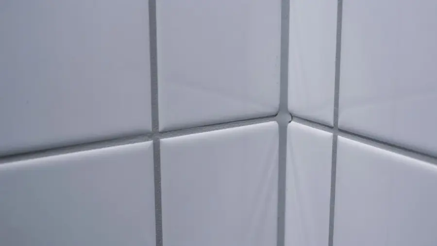
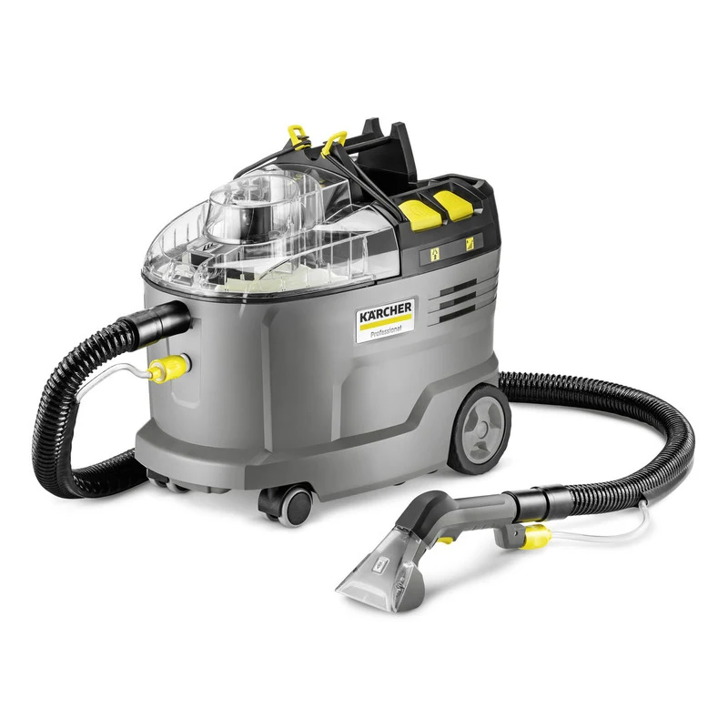
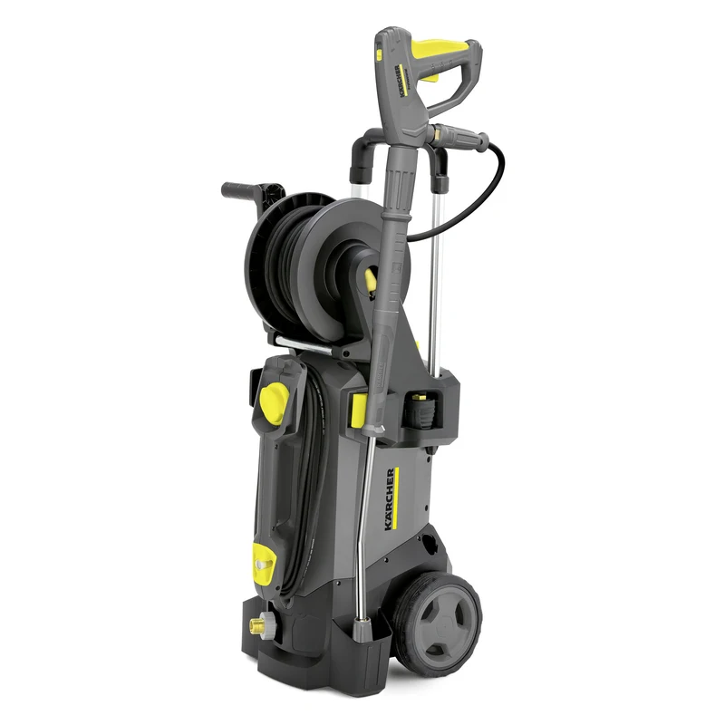

01
Canapé tissu
3 places compatible
CHF150
Nettoyage par injection-extraction.
Lausanne · intervention sur place
Textiles, détails vapeur et extérieurs compatibles : nous identifions la surface, choisissons le geste adapté et réalisons le nettoyage.
Repère immédiat
CHF 150
Canapé tissu 3 places compatible · injection-extraction.
Voir les conditionsPhoto d’application officielle Kärcher · illustration de méthode, pas une réalisation de l’activité.
01 / Tarifs indicatifs
Deux montants publics situent un besoin textile simple. Le support, ses dimensions, son état et l’accès sont vérifiés avant confirmation.
01
CHF150
Nettoyage par injection-extraction.
02
CHF15/m²
Intervention sur place ou en atelier selon le tapis.
03—04
Devis selon support
Compatibilité, accès et périmètre vérifiés avant intervention.
Source des deux montants textiles : prix publics observés le 29 juillet 2026 dans le panel suisse V2. Ni rabais ni forfait universel. Les gestes vapeur et extérieur n’ont pas de prix équivalent publié dans le panel.
Comprendre la méthode02 / Prestations
Une méthode concrète : examiner d’abord, intervenir ensuite. Aucune promesse de retrait de tache, de séchage ou de désinfection.
01
Textiles
Canapés, fauteuils, chaises rembourrées, moquettes et tapis compatibles.
02
Détails compatibles
Joints, sanitaires et surfaces dures compatibles, pour le nettoyage et le dégraissage.

03
Extérieurs
Terrasses et sols extérieurs compatibles, avec pression et distance adaptées au matériau.

Les images d’application sont illustratives et ne présentent pas des réalisations de l’activité.
03 / Méthode
La compatibilité du support et les précautions précèdent toujours le choix de l’équipement.
La surface et le besoin.
La compatibilité et les précautions.
Le geste et l’équipement adaptés.
Le périmètre et le prix par devis avant intervention.
04 / Instruments
Les équipements illustrent une méthode ; ils ne sont pas des produits autonomes.
01

Injection-extraction textile
02

Textile mobile
03

Nettoyage vapeur
04

Extérieur haute pression
05 / Préparer le besoin
Noter la surface, les dimensions utiles, le matériau, l’état visible et les contraintes d’accès.
Ce parcours reste informatif dans la préversion et ne transmet aucune donnée.
Option secondaire
Cette option est secondaire : elle ne remplace pas la prestation de nettoyage présentée ci-dessus. Aucun lien n’est proposé tant qu’une destination réelle n’existe pas.
Transparence
« Nettoyage Lausanne » est un nom de travail. L’identité, la zone exacte, les conditions, le canal de réservation et les tarifs définitifs ne sont pas encore arrêtés. Cette préversion ne prend pas de réservation et ne formule aucune garantie, délai, résultat, avis client ou disponibilité.